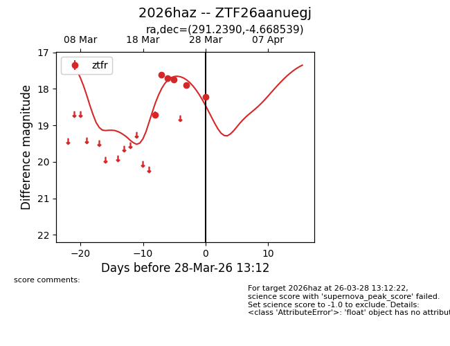
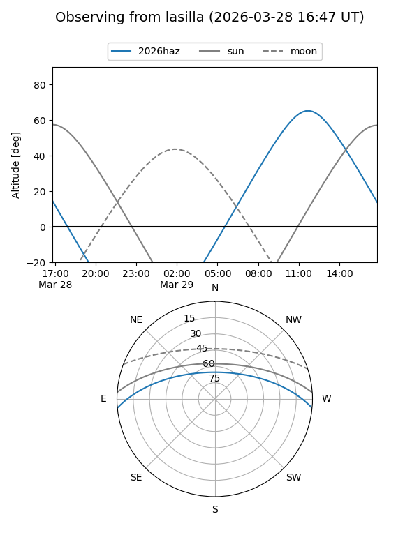
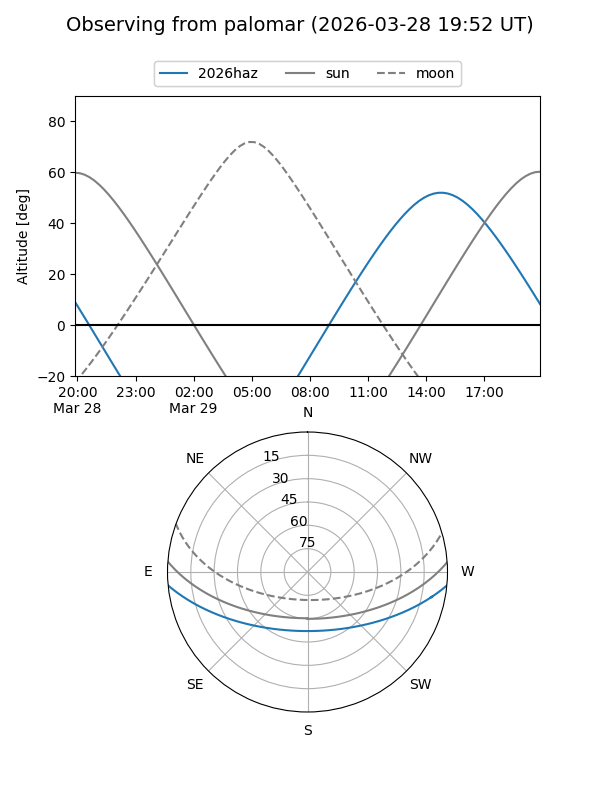
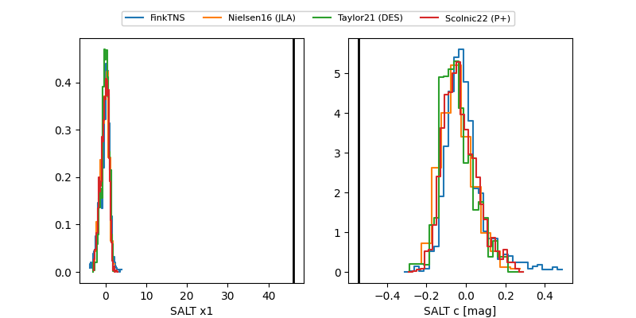

2026haz
Target 2026haz at 2026-03-28 13:15
Aliases and brokers:
FINK: link
Lasair: link
ALeRCE: link
TNS: link
YSE: link
alt names
ZTF26aanuegj (ztf,fink_ztf)
2026haz (tns,yse)
Coordinates:
equatorial (ra, dec) = 291.2390,-4.66854
equatorial (HMS+DMS) = 19:24:57.36,-04:40:06.74
galactic (l, b) = (32.5712,-9.57744)
Flags:
Photometry:
last ztfr=18.23
6 ztfr detections
Lightcurve

Visibility


Additional plots
